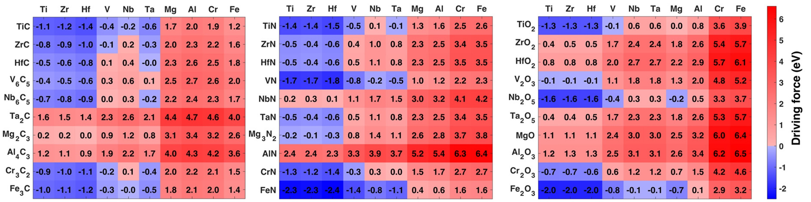
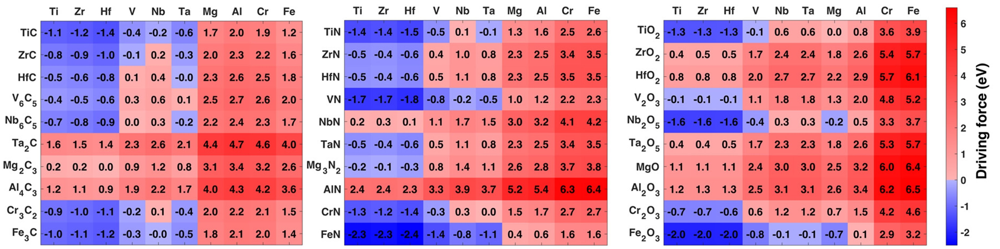
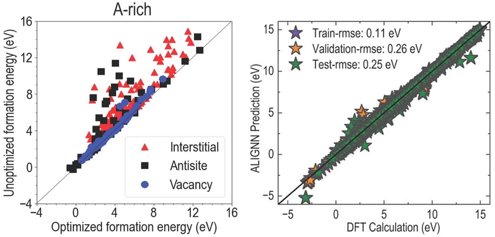

Challenge
- One of the long-standing challenges in materials science is in understanding the atomistic reconstructions at metal/ceramic and ceramic/ceramic interface at an atomic level.
- Metals such as Ti coated with hard ceramics (carbides, nitrides) of transition elements, find applications in aerospace components, biomedical implants, diffusion barrier layer in semiconductors.
- The growth mechanism of semiconducting oxides on substrates such as SiO2, MgO, Al2O3 can be understood.
- In solar cells with multiple interfaces, the interface can be studied by isolating effects from other interfaces.
- We predicted several Ti-N phases that can form at the Ti/TiN interface and proposed that atomically graded Ti/TiN interface is theromodynamically more favorable over a sharp interface [Link].
- Considered 300 technologically and scientifically important metal/ceramic systems: a combination of 10 metals (M=Ti, Zr, Hf, V, Nb, Ta, Mg, Al, Cr, and Fe) and corresponding 30 ceramics MaXb (X=C, N, and O). Assessed driving force to form a graded interface by calculating vacancy and interstitial formation energies of anions in ceramics and metals, respectively. Blue squares represent systems that favor graded interface [Link].
 

Challenge
Our Work
- Using first-principles predicted point defect formation energies to build a machine learning model that can predict defect formation energies in semiconductors.
- Defect formation energies can help in improving semiconductor electronics, healthcare, communication, renewable energy.
Our Work
- We chose several combinations of II-VI, III-V, IV-IV semiconductors and trained ~15,000 data points using artificial neural network model to predict defect formation energies [Link].
